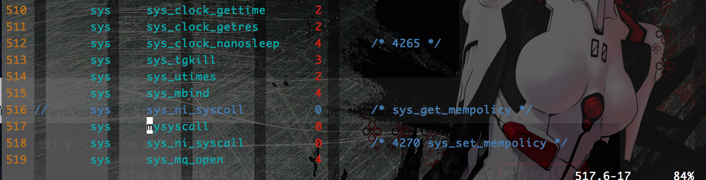

为MIPS指令集的WRTnode添加系统调用
Embedded System Lab 5 on WRTnode
1. 实验准备
- WRTnode核心板直插手机充电线作为供电，通过Macbook的终端ssh登录操作，通过浏览器端的Luci配置界面刷固件；
- 交叉编译环境搭建参照
http://adward-r.github.io/posts/samba-and-cross-compile-toolchain-on-wrtnode.html，我在之前这一步的时候已经下载好了WRTnode定制版本的OpenWRT源码，并编译了固件，中间文件和配置文件都放在了自己的VPS上，编译起来会比较快，也不需要修改配置了。
2. 添加系统调用
以下{$linux-src}路径指的是sdk目录下的build_dir/target-*/linux-ramips_mt7620n/linux-*/，内部文件目录结构即与一般Linux Kernel版本源码相似。
例如，在我的VPS上是~/OpenWrt/wrtnode-sdk/build_dir/target-mipsel_24kec+dsp_uClibc-0.9.33.2/linux-ramips_mt7620n/linux-3.10.49/。注意编译需要在非root用户下进行。
2.1 mysyscall.c
$ cd {$linux-src}/arch/mips/kernel/，新建mysyscall.c文件作为新增的系统调用的实现代码，效果是在日志中输出一行文字：
#include <linux/kernel.h> void mysyscall(void) { printk("New syscall!\n"); }
2.2 Makefile
在同目录下的Makefile中的obj-y项中添加mysyscall.o的链接规则（第9行）：
2.3 scall32-o32.S
在同目录下的scall32-o32.S系统调用表中添加新系统调用的声明（这是32位系统），如下图所示，将其中一个sys_ni_syscall替换为我们的mysyscall（第517行）；根据右侧注释的标号，这是OpenWRT的第4269号系统调用。

2.4 syscalls.h
$ vi {$linux-src}/include/linux/syscalls.h，如下第199行，添加新系统调用函数的声明（这个文件是non-arch-specific的）：
3. 编写测试程序
用之前交叉编译实验中搭建好的OpenWRT-SDK编译如下src内容的系统调用测试程序（包构建方法同之前的helloworld工程，不加赘述）：
#include <linux/unistd.h> #include <sys/syscall.h> #define __NR_mysyscall 4269 int main() { syscall(__NR_mysyscall); return 0; }
4. 编译固件并烧录到WRTnode
回到wrtnode-sdk顶层目录上执行$ make [V=s]重新编译固件，编译完成后的固件见Lab 2的参考链接；
将编译完成后的*.bin文件传回Macbook，通过浏览器访问192.168.8.1的Luci配置界面，在导航栏上选择system -> backup / flash firmware刷固件；待WRTnode蓝灯闪烁，重新出现信号并能够连接上时，将测试程序的可执行文件通过scp传送到板子，ssh上板子，执行如下测试：
可以看到系统日志里面输出了新的系统调用打印的信息，添加成功。
5. 参考资料
[树莓派上为内核添加系统调用]
http://blog.csdn.net/rk2900/article/details/8848093